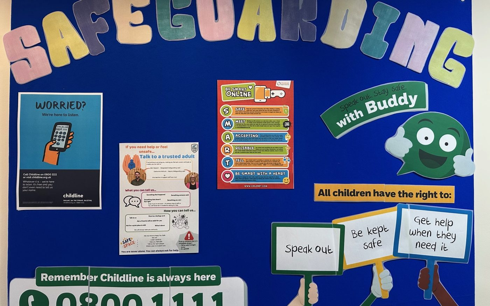
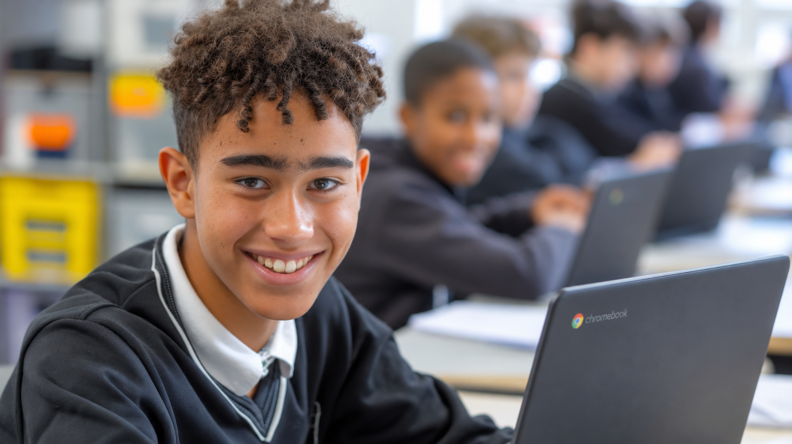
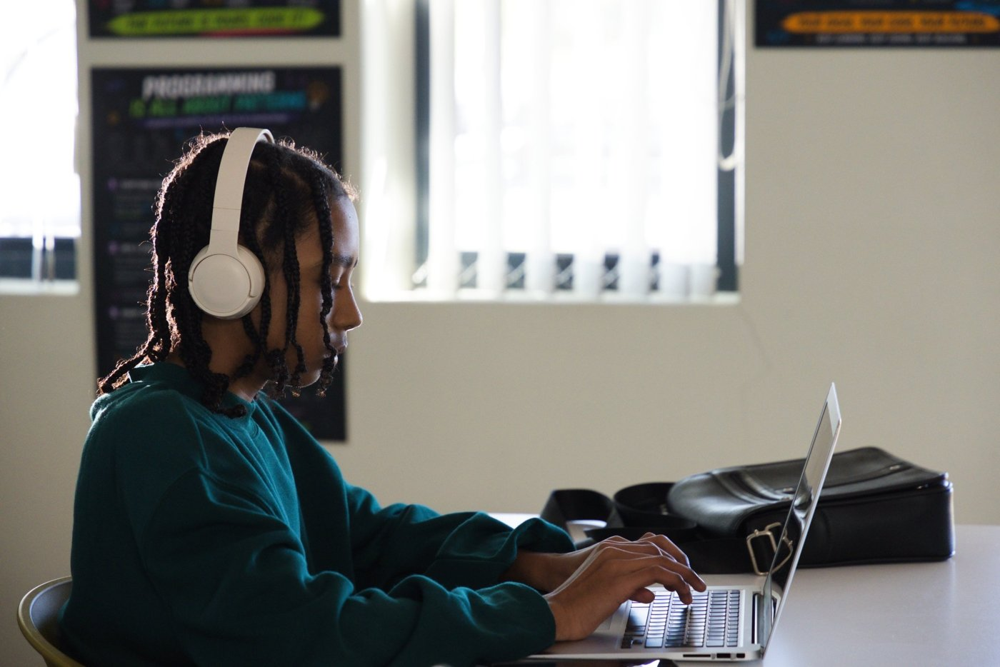
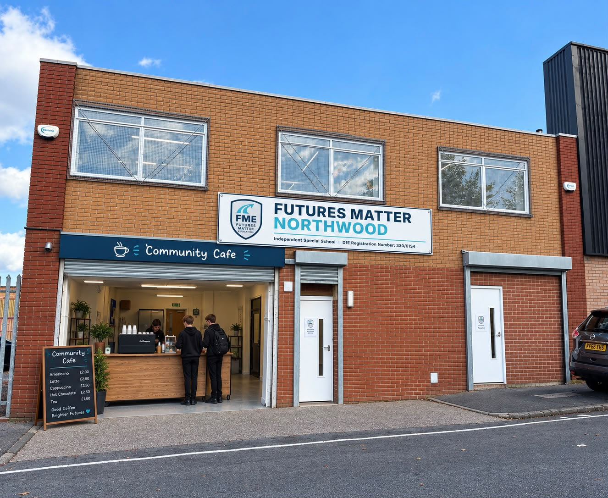

Independent special school · Ages 11 to 16 · Highgate, Birmingham
Every young person's future matters.
Welcome to Northwood, a small school where every pupil is met exactly where they are. We hold high aspirations in a calm, low-threat, low-barrier setting, so pupils feel safe, understood and ready to learn.

Our ethos and aims
Ambitious, respectful, resilient and kind
These four values guide everything we do. Our aim is to deliver a broad, balanced and ambitious curriculum, provide the experiences and skills pupils need for further education, employment and active roles in society, and support pupils' needs so they can access, enjoy and succeed in school.
Highest aspirations for every young person
Dignity for pupils, families and each other
Confidence to keep going when things are hard
Looking after one another and our community



A welcome from our Headteacher
Meeting every young person exactly where they are
Welcome to Futures Matter - Northwood. It is a genuine privilege to introduce myself as the founding Headteacher of this exciting new provision, opening in the heart of Birmingham for secondary age young people whose primary need is SEMH and ASC.
At Northwood, we are building a school where every young person is met exactly where they are, and where we hold high challenge and high aspiration alongside a genuinely low threat, low barrier environment. We welcome visits, so that you can experience Northwood first hand. I look forward to meeting you and your child soon.
Benjamin Neasom
Founding Headteacher
A message from our Proprietor
Everyone's future matters
Choosing the right school is a life changing decision, and we know how much rides on getting it right. Futures Matter Education was set up by experienced, like-minded professionals who believe that everyone's future matters, and who wanted to offer provision where young people are happy, safe and well supported.
Carrie-Ann McGurk
Proprietor
Age range, boys and girls
Pupils per class
In every class
Over 38 weeks
Our pupils
Learning that fits the young person
Our pupils have a range of needs, including moderate learning difficulties, speech, language and communication needs, autism, and social, emotional and mental health needs. Pupil voice shapes how we teach, and pupils help plan their own learning.
A trauma-informed, relational approach
When a young person feels safe, understood and valued, they are ready to re-engage with learning, often for the first time in years.
Therapeutic and clinical input
Speech and language therapy and other support are arranged as needs are identified, and we are training an in-house Thrive practitioner.
Pupils have a real say
The views of pupils shape curriculum planning, annual reviews and transition reviews, and we check in regularly about how school is working.
Part of the neighbourhood
We help pupils become valued members of their local community through enrichment, work-related learning and life skills.
Curriculum and enrichment
An ambitious curriculum with plenty to enjoy
A broad curriculum based on the National Curriculum, shaped to each pupil's needs and interests. Every pupil reads for a protected 30 minutes a day.

Maths, English and Science
Maths and English every day, using White Rose Maths, White Rose Science and Pearson English schemes of work.
History, Geography and R.S.
Taught through shared themes, with a Theme of the Week to bring learning together.
Food Technology
Our teaching kitchen is the classroom for cooking, nutrition and independence. Theory first, then practical.
Physical Education
Regular PE at an offsite venue builds health, teamwork and confidence.
Computing and Digital
Practical digital skills and safe, confident use of technology.
PSHE as a golden thread
Personal, social, health and economic education runs through every subject, building wellbeing and resilience.
Careers and work-related learning
Independent careers guidance and work experience prepare pupils for college, training and work.
Offsite Enrichment Fridays
Community and life-skills experiences that bring learning to life.

Qualifications and next steps
Recognised qualifications, personal pathways
Year 7 and 8
Accreditation starts in Year 7 with the AQA Unit Award Scheme and Entry Level qualifications.
By Year 9
Pupils can sit Level 1 Functional Skills.
Years 10 and 11
A personalised pathway of Functional Skills, Entry Level Certificates, GCSEs and equivalents, plus life skills and vocational awards such as Basic First Aid, Food Hygiene, The King's Trust awards and Duke of Edinburgh's Award.

Looking ahead
Learning for the real world
We are planning for pupils to take part in running a community cafe enterprise. It would build teamwork, customer service, food skills and confidence, and give pupils a real part to play in their community.
Thinking of Northwood?
Referrals come directly from the pupil's local authority, at any point in the year. Our admissions page explains each step and who to contact.
Keeping children safe
Safeguarding is at the heart of all we do, following Keeping Children Safe in Education. Our Designated Safeguarding Lead is Benjamin Neasom, Headteacher.
Concerned about something that has happened online? Report it to the CEOP Safety Centre.
Concerns, however small: safeguarding@futuresmattereducation.co.uk or 0121 835 1360. In immediate danger call 999.
Latest news
What has been happening at Northwood
Welcome to a new school year
Our first week was filled with exciting activities and new discoveries.
Mental Health Awareness Day
Writing for wellbeing activities and open conversations about looking after ourselves.
Macmillan Coffee Morning
We are raising money for Macmillan Cancer Support.
We welcome visits
See the school, meet the team and ask your questions. We offer a home or school visit and a taster session. Call 0121 835 1360 or send an enquiry.